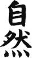

Ukiyo-e, kelime anlamı olarak “yüzen (suyun üstündeki) dünyadan resimler” anlamına geliyor. Edo döneminde ortaya çıkan ve dönemin bakufu askeri yönetimi altında, özellikle orta sınıfın kendini kaptırdığı hazcı yaşam tarzını (vur patlasın, çal oynasın) resmeden bir sanat olarak gelişen ukiyo, kabuki tiyatrosu aktörlerinin, dönemin meşhur manken ve fotomodel tayfasının, günlük hayattan enstantanelerin resmedilmeleri ile başlamış.
Ukiyo-e eserlerinin seri üretimi, tahta baskı tekniği kullanılarak sağlanıyor. Kentleşmenin artması ve metropol kültürünün oluşması ile Edo’da hızla gelişen ortadireğin orijinal resim almaya gücü yetmediği için yetenekli sanatçıların eserlerinin baskı tekniğiyle çoğaltılması akla geliyor. Ukiyo-e’nin doğuşu, kitaplarda yer alacak resimlerin basılması şeklinde olsa da zamanla poster biçiminde, tek yapraklı ukiyo-e’ler ağırlık kazanıyor.
17. yüzyılda ukiyo-e’ler tek renk mürekkep ile basılırken, 1700’lerden itibaren çok renkli basım tekniklerine geçiliyor. Bunun için öncelikle sanatçı abimiz basılacak resmi güzeelcene çiziyor. Asistan(lar)ı, resmin üstünden geçerek kopyalarını tahta blokların üzerine çıkarıyor. Tahta bloklar oyularak baskı kalıplar hazırlanıyor. Her kalıp ile resimde kullanılan bir (veya birkaç) renk sırayla kağıtlara basılarak resim çoğaltılıyor. Yani, bizim ilkokuldayken yaptığımız patates baskısının (Ne çok patates mundar etmiştim!) biraz daha gelişmiş olanı...
Ukiyo-e’ler, Edo dönemi popüler kültürünün en önemli öğelerinden olmuş. O dönem ile ilgili bir müzeyi gezerken, Edo’da ne kadar çok sayıda kitapçı ve ukiyo satan dükkân olduğunu öğrenip şaşırmıştım. Ukiyo-e’lerin konuları zamanla, bizim “star” dediğimiz, ünlü erkek ve kadınların resimlerinden sokaktaki hayata, daha sonra da manzara ve doğa betimlemelerine kaymış.
Bu sanatın en meşhur icracılarından Hokusai, ukiyolarda doğa ve manzara kompozisyonlarının doruğuna çıkmış. En önemli eseri “Fuji Dağının 36 Görünümü” olan Hokusai’nin, “Fuji Dağının 100 Görünümü”, “Fuji Dağının 46 Görünümü”, “Fuji Dağının Bilmemkaç Tane Daha Görünümü” isimli eserleri de mevcut olup, bir tanecik dağdan çıkardığı malzeme ile haklı bir şöhret kazanmış.
Şimdi diyeceksiniz ki Hokusai Fuji Dağıyla kafayı bozmuş. Doğrudur; Fuji Dağı ve simgelediği yüzlerce kavram Hokusai’yi derinden etkilemiştir. Hatta Hokusai’nin çizdiği “Fuji Dağının Kanagawa sahillerindeki dalgalar arasından görünümü”, dünyanın en çok tanınan ukiyo eseridir. Ancaaak, Fuji Dağının dönemin tüm sanatçıları tarafından ukiyoda kullanılmasının bir amacı daha vardır.
Edo döneminin baskıcı bakufu rejimi, ukiyo-e’lerde günlük hayatın betimlenmesine gıcık kapmış. Çünkü bu eserlerde halkın fakirliğine, yönetici sınıfın kokuşmuşluğuna ve benzeri sosyal çarpıklıklara göndermeler yer almaya başlamış. Bunun üzerine bakufu, sanatçılara kibarca, “Gidin de biraz dağ taş, börtü böcek, ağaç orman falan çizin” demiş. Bunun üzerine ukiyocular Fuji Dağı başta olmak üzere (O dönemde henüz gökdelenler yapılmadığından Tokyo’nun hemen her yerinden görülebiliyordu) manzara resmi çizmeye başlamışlar. Ancak bir süre sonra kanı bitlenen çizerler, arka planda Fuji Dağı gözükecek şekilde, ön planda şehir hayatından enstantaneler çizmeye devam etmişler. İşte, “Fuji Dağının 36 Görünümü” gibi eserlerin arka planında tüm haşmeti ile Fuji görünse de ön plana dikkatlice bakıldığında gündelik hayat ile ilgili birçok detaya rastlanmaktadır. Yani Fuji Dağı, sosyal içerikli resimlerin koruyucu abisi olmuştur:
“Gel buraya ressam bozuntusu, bizim komiseri rüşvet alırken çizmişsin.”
“Ekmek Buda çarpsın ki ben Fuji Dağını çizdim abi.”
“Sus yalancı, Fuji arkada miniminnacık zor gözüküyor, önde komserim esnaftan haracını toplarken resmin dörtte üçünü kaplıyor.”
“Abi ne yapayım, perspektif diye bir şey var, doğanın kanunu... Ben tam Fuji’yi çizerken o da kareye girmeseymiş.”
Bakufunun hoş görmediği konulardan birisi de erotik çizimler olmuş ve bu çizimler zamanla yasaklanmış. Tabii ki her yasağın başına gelen bu yasağa da gelmiş, piyasayı erotik çizimler sarmış ve shunga denilen bir erotik-ukiyo akımı ortaya çıkmış. Hokusai gibi Fuji takıntılı saygın sanatçılar bile shunga çizmişler. Örneğin, Hokusai’nin “Balıkçının Karısının Rüyası” diye bir eseri var ki, ne siz sorun ne ben anlatayım... Günümüzde bile yanına yaklaşabilecek fantezi tanımıyorum.
Hokusai kadar meşhur bir başka ukiyo-e sanatçısı da hemen hemen aynı zamanlarda yaşamış olan Hiroshige. Hokusai kafayı Fuji Dağı ile bozunca, Hiroshige de “Hit the Road Jack” diyerek (Ray Charles’ın “Düş Yollara Jack” şarkısındaki gibi) kendini yollara vurmuş. “Biwa Gölünün 8 Görünümü”, “Kyoto’nun Bilmemkaç Görünümü” gibi ilk dönem çalışmalarından sonra, Tokyo ile Osaka’yı bağlayan Tokaido Yolu boyunca yer alan mola yerlerinde çizdiği “Tokaido Yolundan 53 Görünüm” adlı eseriyle şöhreti yakalamış. Bir diğer kervan yolunda çizdiği “Kaido’dan 69 Görünüm” ve “Edo’dan 100 Güzel Görünüm” çalışmalarıyla da cukkayı sağlama almış.
Hiroshige’nin eserlerinde de, arka planda yer alan muhteşem manzara ile birlikte, ön planda tüccarların, köylülerin, balıkçıların hayatlarından ilginç kesitler görülebiliyor. Daha o yıllarda Japonya’da iç turizmin patlamış olması ve ukiyo sanatının bu patlamaya etkisi ilginç bir detay olarak not edilebilir. Hiroshige de çizimlerindeki olağanüstü kompozisyon ve perspektif anlayışı, canlı renkler ve mevsimsel öğelerle halkı gezip görmeye teşvik etmiş.
1700-1800’lerde ukiyo-e Japonya’da en çok rağbet gören sanat akımlarından birisi iken, Japonya henüz dış dünyaya kapalı imiş. Meiji dönemi ile birlikte Japonya’nın Avrupa ile ilişkileri başlayınca, özellikle Fransa, Hollanda ve İngiltere ile ticareti gelişmiş. Bu ülkeler, Japonya’dan seramik ürünleri, tabak, çanak, vs. ithal etmeye başlamışlar. Japon ihracatçılar, uzun gemi yolculuklarında seramik ürünler kırılmasın diye mallarını sıkıca kağıtlara sarıp sarmalamak istemişler. Etrafta kağıt kalmayınca, eski ve kullanılmayan ukiyo-e’leri de ambalaj amaçlı kullanmışlar.
İhraç malları Hollanda ve Fransa’ya ulaştığında, seramikleri ambalajından çıkaran Avrupalıların gözüne bir süre sonra bu eserler ilişmiş. Resimsever Avrupalı tüccarlar, ambalaj kağıdı olarak kullanılan eserleri görünce dumura uğramış, ukiyo uğruna seramik ticaretini sürdürmüşler. Halbuki bize sık sık tekrarlanan bir öğüt vardı: “Zarfa değil mazrufa bakacaksın” diye... Demek ki neymiş, mazrufa bakarken zarfı da unutmayacaksın. Hele ki işin içinde Japonlar varsa... Kaderin ilginç bir tesadüfüdür ki kültürlerinde herhangi bir unsurun kendisinden çok sunumunu öne çıkaran bir milletin sanatı, Avrupa’ya ambalaj malzemesi olarak girmiş.
Nitekim, bir süre sonra Avrupalı sanatseverler Japonya’dan ukiyo getirtmeye başlamış. Van Gogh, Antwerp’de yaşadığı dönemde limana gider ve ukiyo toplarmış. Van Gogh ve Monet başta olmak üzere, dönemin Avrupalı empresyonist ressamları ukiyo-e tarzından çok etkilenmişler ve bu etkiyi eserlerine yansıtmışlar.
Ukiyo sanatı, Meiji döneminden sonra eski popülerliğini yitirmiş... şeklinde bir yorum yaparsam, tam da doğruyu yansıtmış olmam aslında. Birçok sanat dalının modern çağda tarz değiştirmesi veya yeni nesil sanat akımlarına ilham kaynağı olması gibi, ukiyo da değişime uğrayarak manga ve anime diye bilinen Japon çizgi roman ve animasyon çılgınlığının temellerini oluşturmuş.